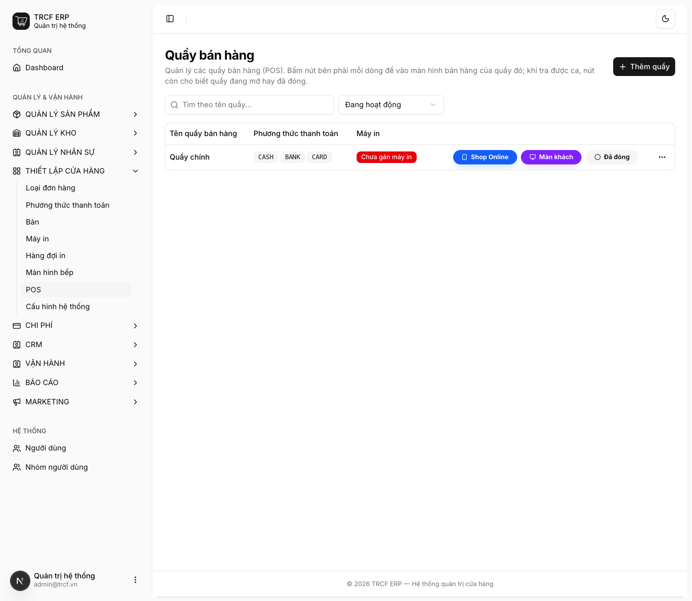
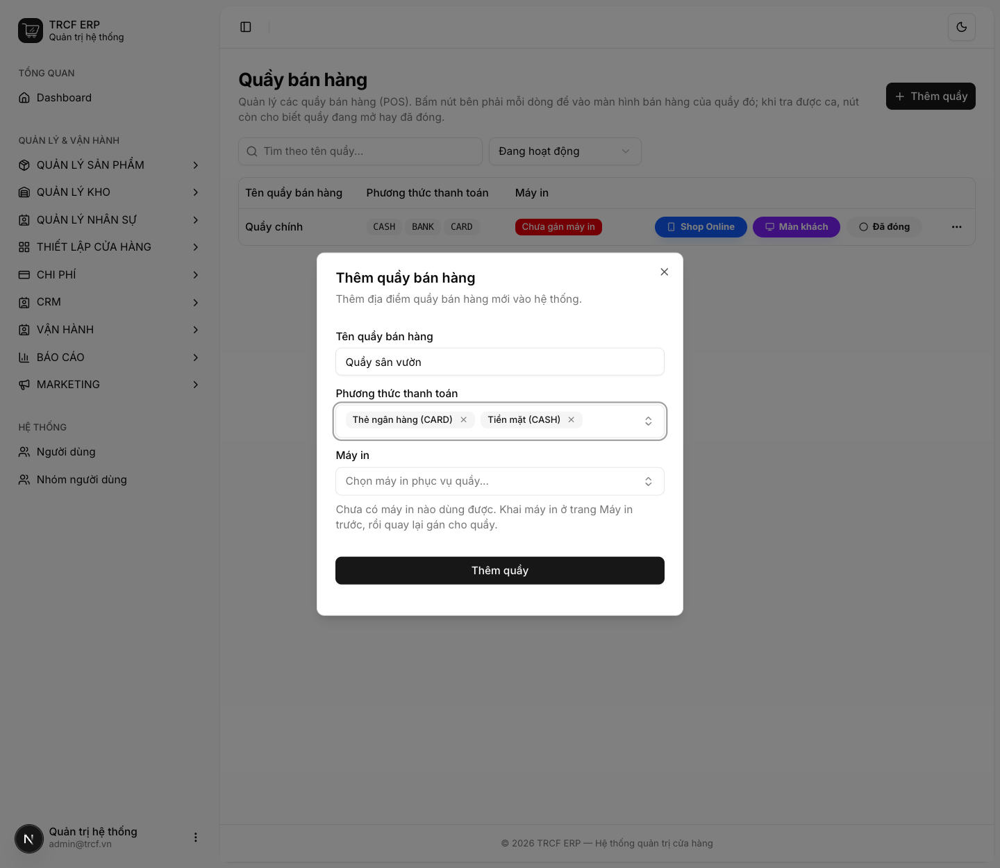
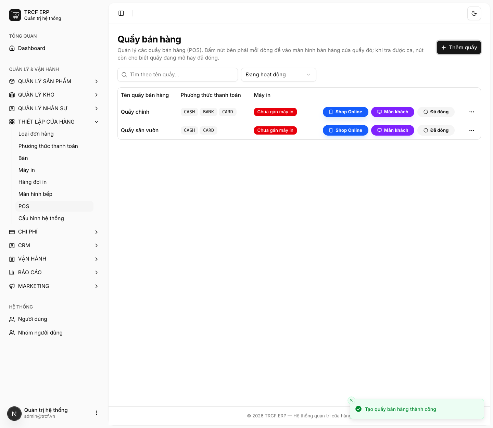

Chương 4 · Thiết lập POS
4.1 Tạo cửa hàng POS
1. Đường dẫn vào chức năng
Menu trái: Thiết lập cửa hàng → POS (địa chỉ /pos).
- Cần có trước: phương thức thanh toán (mục 4.2).
2. Ví dụ nền và các bước thực hiện
Ví dụ: quán đã có "Quầy chính", thêm "Quầy sân vườn".
- Quầy sân vườn nhận thanh toán bằng "Tiền mặt (CASH)" và "Thẻ ngân hàng (CARD)".
- Quầy này chưa gán máy in (gán sau ở mục 4.3).
Bước 1Mở trang POS
- Bấm Thiết lập cửa hàng ở menu trái.
- Chọn POS.
- Danh sách quầy hiện: tên, phương thức thanh toán, máy in.

Bước 2Thêm quầy mới
- Bấm Thêm quầy (góc phải trên).
- Tên quầy bán hàng: nhập "Quầy sân vườn".
- Phương thức thanh toán: chọn "Tiền mặt (CASH)" và "Thẻ ngân hàng (CARD)".
- Máy in: bỏ qua nếu chưa khai máy in.
- Bấm nút Thêm quầy trong hộp thoại.

Bước 3Kiểm tra kết quả
- Quầy mới hiện trong danh sách.
- Cột phương thức thanh toán: "CASH", "CARD".
- Mỗi dòng có 3 nút: Shop Online, Màn khách, nút trạng thái ca (Đã đóng).

3. Giải thích các trường
| Trường | Điền gì | Bắt buộc |
|---|---|---|
| Tên quầy bán hàng | VD "Quầy chính", "Quầy sân vườn" | ✅ |
| Phương thức thanh toán | Chọn các phương thức áp dụng cho quầy này (chọn nhiều được) | ✅ |
| Máy in | Máy in phục vụ quầy. Cần khai máy in ở mục 4.3 trước | — |
Các nút trên mỗi dòng quầy
| Nút | Mở ra |
|---|---|
| Nút trạng thái ca (Đã đóng / Đang mở) | Màn bán hàng của quầy → mục 5.1 |
| Màn khách | Màn hướng về phía khách: giỏ hàng + mã QR thanh toán |
| Shop Online | Đường dẫn đặt hàng online của quán |
4. Lưu ý quan trọng
⚠️
Phương thức chọn ở đây quyết định thu ngân thấy gì khi thanh toán.
- Quên gắn "Chuyển khoản" thì thu ngân không chọn được.
- Dù phương thức đó vẫn tồn tại.
⚠️
Quầy đã phát sinh dữ liệu thì không xoá được.
- Đã có đơn hàng, phiếu chi, ca bán hoặc bút toán quỹ.
- Mọi bút toán trong sổ quỹ đều gắn với quầy.
- Ngừng dùng: chọn Lưu trữ.